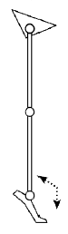
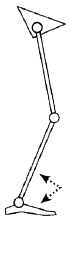

Antecedentes
Vídeos sobre la exploración
Valoraciones
Longitud de miembros inferiores
Escala de movilidad funcional (distancia a caminar)
Tono muscular - Escala Ashworth
| Escala de Ashworth | Izquierda | Derecha | |
|---|---|---|---|
| CADERA | Flexión | ||
| Inflexión | |||
| RODILLA | Flexión | ||
| Inflexión | |||
| TOBILLO | Flexión | ||
| Inflexión |
- 0 - Tono muscular normal.
- 1 - Discreto aumento del tono muscular que se manifiesta por un enganche o una resistencia mínima al final del movimiento cuando el miembro afectado es movilizado en flexión o extensión.
- 1+ - Discreto aumento del tono muscular, que se manifiesta por un enganche discreto seguido de una resistencia mínima durante al menos la mitad del resto del movimiento.
- 2 - Aumento más marcado del tono muscular a lo largo del movimiento, aunque permite una fácil movilización del miembro afectado.
- 3 - Aumento considerable del tono dificultando la movilización pasiva.
- 4 - El miembro afectado está fijado en extensiín o en flexión.
Análisis observacional de la marcha
Common gait patterns: Spastic Diplegia
| True equinus | Jump knee | Apparent equinus | Crouch gait |
|  |  |
 |
 |
| &>90º Gastroc - - Hinged AFO |
&>90º Gastroc Hamstrings/RF (Psoas) Hinged AFO |
&=90º (Gastroc) Hamstrings/RF Psoas Solid AFO |
&<90º - Hamstrings/RF Psoas Grafo |